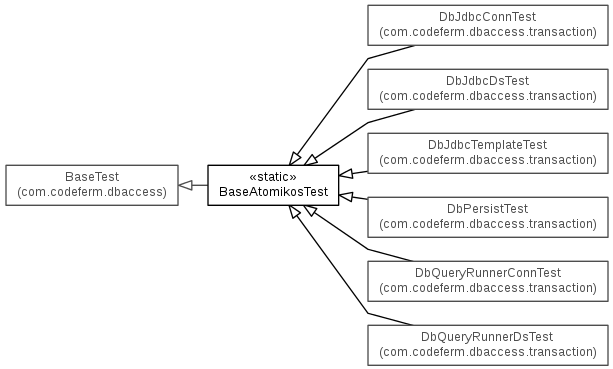

Functional tests
Unit tests are provided to test all the basic functionality. You can really think of these more as integration tests since each test handles a complete functional section of database work.
- BaseTest is the parent test of all other tests. It handles acquiring application properties and SQL statements.
- BaseDbcpTest is the parent of all DBCP based tests. It handles acquiring a DataSource based on BasicDataSource. All child classes test implementation specific JDBC wrappers against DBCP pooled connections.

- BaseAtomikosTest is the parent of all Atomikos based tests. It handles acquiring a DataSource based on AtomikosDataSourceBean. All child classes test implementation specific JDBC wrappers against Atomikos.

- TransactionTest Is used by all transaction tests to verify commit and rollback on @Transaction annotated methods. Standard Connection and JTA based connections are tested.